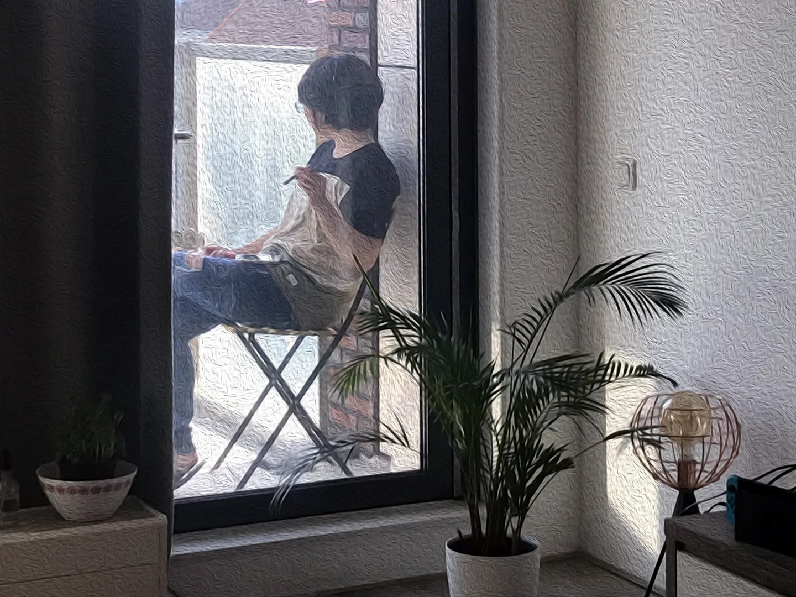

日常記事｜你要有所準備，大麻才會幫你。大概吧？
今年給自己一段休息的時間，去荷蘭逗留了三個月。而作為一個觀光客，不免想體驗一下此地可以合法持有的「大麻」，這篇主要快速紀錄一下自己的體驗，知識類的東西就交由其他專業的文章負責了！
雖然體驗大麻是在荷蘭To-do list的其中一項，但一開始根本沒做什麼功課。在某次前往阿姆斯特丹跟朋友的友人聚餐時提及此事，透過友人的介紹與協助下購得。
不夠詳細專業的超基本知識
大麻簡單分為「嗨的(high)」跟「想睡的(sleepy)」兩種，沒有睡眠問題的我當然是大聲說「我要嗨的！」，買的是混有菸草的捲菸，放在試管一般的塑膠瓶裡，一管約為7歐。友人說可以跟著朋友共享一捲，如果沒有朋友則可以分幾次抽，總之絕對不是讓你一次抽完的。
抽大麻最基本的建議是「待在安全的場域（例如家裡），且有可以信賴的親友在身旁」進行，因為每個人會有不同的反應，以防發生危險。食用時機呢，查了文章有提到起床時、下班後、洗澡前、看電影前、吃晚飯前、睡覺前等等，都是推薦嘗試的時間點。
雖然早早就取得了大麻捲菸，但難得出國，安排的行程總是不少，於是大麻被我遺忘在旁，直到回國的兩週前，我匆匆開始了吸食大業。有機會體驗的讀者，建議先搜尋大麻吸食指南一類的文章，總是能夠提供初次體驗的人們一些鼓勵(?)和自信。
大麻學長帶我飛，真的嗎？
先說結論：在我身上的效果不明顯，一開始感到失望，同時嘗試了解到底是哪個環節出了差錯，問了許多朋友慢慢釐清，最後發現自己不再失望，取而代之的是因為有所學習的滿足感，就像孩子接觸到新事物一般。（長大之後，這樣的體驗是不可多得的）
我大約在兩週內抽了４～５次，幾乎每次都加重劑量，並且不斷調整吸食的方式（做為沒有抽過香菸的我來說，這是需要練習的），而為了不因抽大麻的副作用（抽完約2-3小時後會突然極度想睡覺，近乎立刻斷片那種）浪費我美好的白天，只有在看電影前、睡覺前、料理前吸食。
向土生土長的荷蘭人詢問大麻效果時，他說：「(就像是)當你想像你在海邊，你就在海邊。」；向讀過迷幻藥書籍的友人聊起時，他說：「（大概的意思是）進行啟靈療法之前，是要有所準備的，確認問題跟目標是什麼，體驗才能產生意義。」
二者交會出了一個可參考的答案，點出了我的問題：「沒有目的」。
每次的吸食都像交作業，帶著打火機和菸草跑到陽台，看著因為燃燒不斷被吞噬的紙捲邊緣，一邊想著「這次有比上次抽得更多了嗎？」

起初，我唯一記得的效果是抽完之後跑去料理晚餐，削去細細綠蘆筍的表皮時，感覺自己的眼睛像是擁有超大光圈的相機一樣，除了盯著削皮位置的部分之外全都模糊一片，我不需要對焦（＝用力盯著看）、不需要短焦距（＝眼睛跟物體的距離很近），就能擁有超級景深，這種感覺很神奇，可以說是違反物理的吧？
接著，是抽大麻後看了部電影，由阿部寬主演的真人版《羅馬浴場》，已經看過漫畫版的我，明明大概都知道劇情是什麼，卻笑瘋了！這是大麻的效果嗎？我不確定！
最後一個體驗是後來才想起來的。看《羅馬浴場》時，開了兩瓶特別的啤酒，作為一個曾經有努力想喝懂咖啡但失敗的人（只分辨得出酸跟苦，喝不出什麼花香、果香、焦糖等等），作為一個也不算喝得懂啤酒的人（只有過同時喝兩罐時，做出「這罐麥味比較重、這罐比較淡」的發言），我喝了其中一瓶啤酒時說出：「這個味道彷彿是走進文青雜貨店時，自動玻璃門一打開，樸鼻而來的氣味一樣，而且店家的風格主色（牆面之類的）是霧鄉色。」
簡直是腦洞大開。到底是啤酒本身風味太特別，還是大麻的效果呢？
雖然後面兩個體驗都無法被證實是否受大麻所影響，但我已經感到滿足。或許也是因為在荷蘭這段時間，幾乎都是快樂的記憶吧！
延伸閱讀／參考資料
《流行大百科》有一集的主題是大麻（Netflix有）
《改變你的心智：用啟靈藥物新科學探索意識運作、治療上癮及憂鬱、面對死亡與看見超脫》